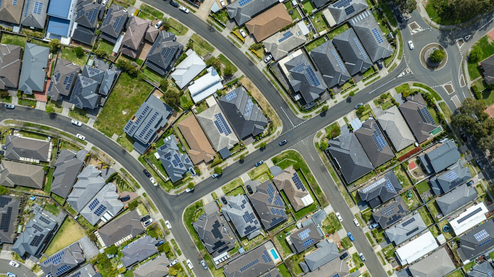
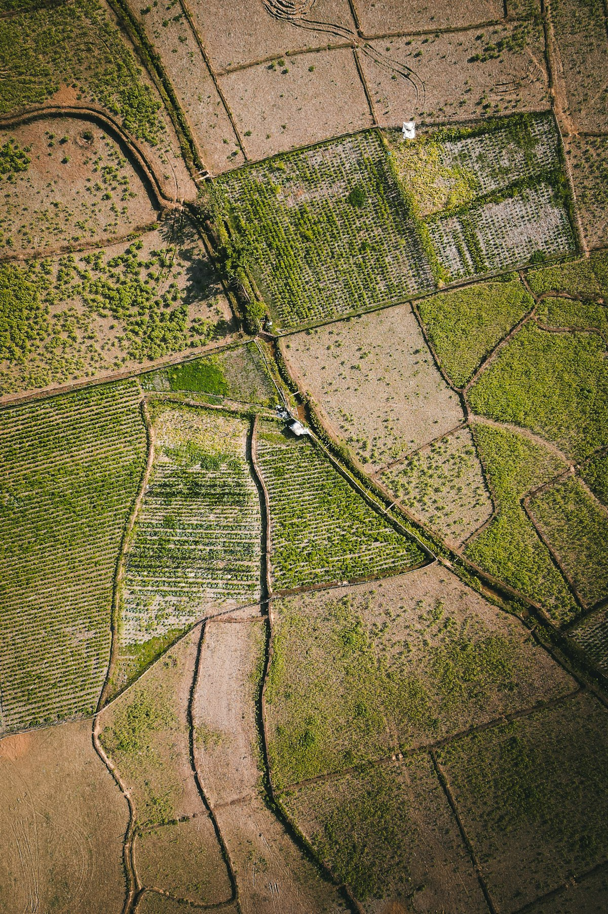
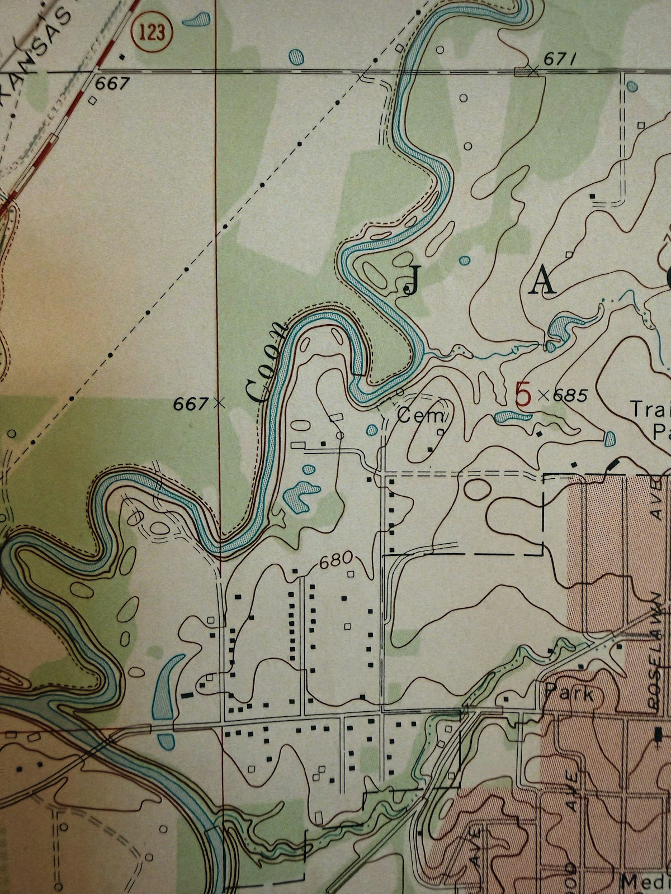
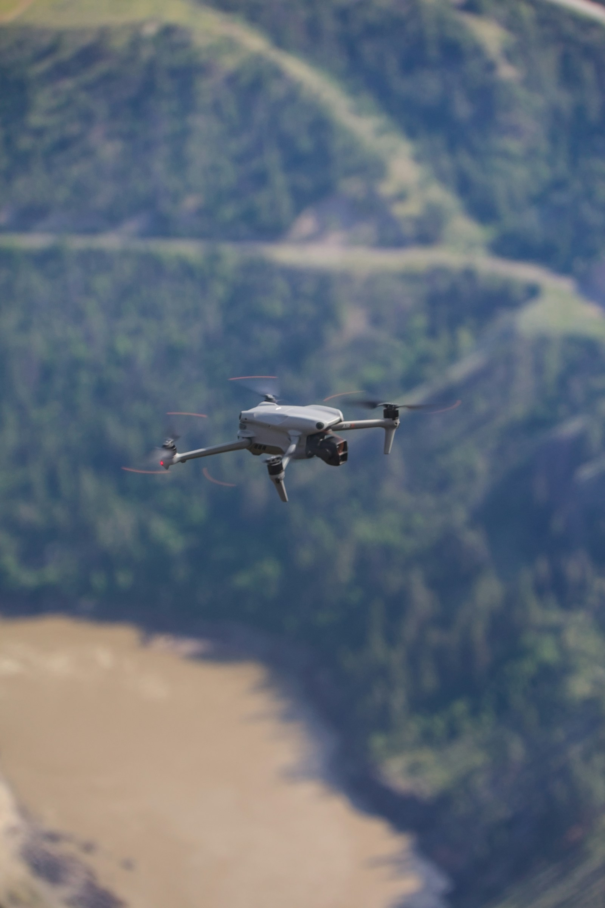
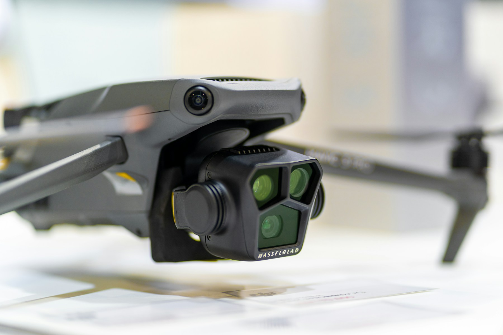

Aerofotogrametria
Levantamentos aéreos de alta resolução para mapear grandes áreas com agilidade e detalhe.
Conheça seu território em cada detalhe. Imagens aéreas e dados precisos para decisões que movem o futuro.
Com aerofotogrametria de alta precisão, transformamos paisagens em informação confiável — para planejar melhor, acompanhar mudanças e agir com segurança.
Converse com nossa equipe ›Do levantamento aéreo ao produto cartográfico, cada etapa é pensada para levar informação clara do campo até a sua próxima decisão.
Saiba como funciona ›
Levantamentos aéreos de alta resolução para mapear grandes áreas com agilidade e detalhe.
Representações detalhadas do terreno para visualizar, medir e comparar com confiança.
Dados espaciais organizados para responder perguntas reais e apoiar o planejamento.
Unimos dados geoespaciais, levantamentos e cartografia para apoiar a gestão de imóveis e o planejamento territorial.

Levantamento e organização de informações físicas e espaciais dos imóveis para apoiar a gestão cadastral e territorial.

Mapas, levantamentos e dados técnicos que apoiam o diagnóstico e as etapas de regularização de áreas e imóveis.

Plantas, bases cartográficas e mapas temáticos preparados para análise, planejamento e tomada de decisão.

Obtenha imagens detalhadas para decisões mais estratégicas.
Equipamentos e sistemas trabalham juntos para capturar, posicionar e transformar cada levantamento em informação confiável.
Aeronaves remotamente pilotadas levam os sensores até a área de interesse e cobrem o terreno com eficiência.

Sensores de imagem capturam detalhes da superfície para compor ortofotos e modelos digitais do terreno.
Receptores geodésicos e pontos de controle ajudam a posicionar e validar os dados levantados.
A configuração de cada levantamento é definida de acordo com a área, o terreno e os objetivos do projeto.
Desde 2025, a Geo Espacial produz mapeamentos aerofotogramétricos com Aeronaves Remotamente Pilotadas (RPA). Reunimos conhecimentos de aerofotogrametria, geodésia, sensoriamento remoto e geoprocessamento para gerar dados geoespaciais detalhados e confiáveis.
Atuamos em iniciativas de engenharia, topografia, infraestrutura e planejamento territorial, em diferentes escalas. Em cada trabalho, valorizamos a ética, o cuidado socioambiental e o rigor técnico.
Vamos conversar sobre seu projeto ›Conte o que você precisa mapear. A gente ajuda você a encontrar o melhor caminho.
Fale com a Geo Espacial ›